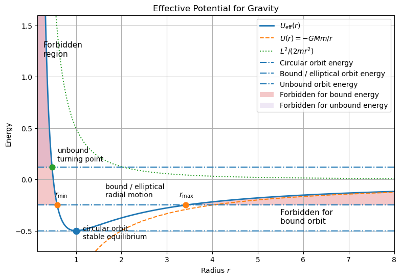

D7.2 Effective Potential and Radial Motion#
D7.2.1 Why Effective Potential?#
From D7.1, we found that motion under a central force:
is confined to a plane
conserves angular momentum
We also found that the total energy can be written as:
👉 This suggests something powerful:
The motion can be treated as a one-dimensional problem in \(r\).
Key Idea#
We combine terms to define a new quantity:
This allows us to rewrite the energy as:
D7.2.2 Definition: Effective Potential#
The effective potential is defined as
It combines:
- The actual potential energy $U(r)$
- A term arising from angular motion
Physical Meaning#
\(U(r)\) → physical interaction (gravity, electrostatics, etc.)
\(\frac{L^2}{2mr^2}\) → centrifugal barrier
👉 This term becomes very large as \(r \to 0\), preventing collapse unless \(L = 0\).
Centrifugal Barrier — Physical Interpretation
The centrifugal barrier is the term
in the effective potential
Where it comes from#
Angular momentum is conserved:
Solving for angular speed:
As the particle moves closer to the center (\(r \downarrow\)), the angular speed must increase rapidly.
Why it acts like a barrier#
The kinetic energy associated with angular motion is:
As \(r \to 0\):
This means:
The energy required to reach small \(r\) becomes extremely large
The particle cannot reach the center
👉 This creates an effective barrier at small \(r\).
Effective force#
Taking the derivative:
This force is:
positive (outward)
very large at small \(r\)
👉 It behaves like a repulsive force, even if the actual force is attractive.
Key insight#
Even in an attractive potential like gravity,
the effective potential becomes:
So:
Gravity pulls inward
Angular momentum pushes outward
👉 Their competition creates stable orbits and prevents collapse.
Special case#
If \(L = 0\):
No centrifugal barrier
Motion is purely radial
The particle can fall directly inward
Big idea:
The centrifugal barrier is not a real force—it is a consequence of conserving angular momentum. It allows us to treat orbital motion as a one-dimensional energy problem in \(r\).
D7.2.3 Radial Motion as a 1D Problem#
The radial motion now satisfies:
Interpretation#
This is mathematically identical to a 1D particle moving in a potential.
We can now use all tools from D6:
turning points
energy diagrams
stability
oscillations
Insight:
A two-dimensional orbital problem has been reduced to a one-dimensional energy problem.
D7.2.4 Turning Points#
Turning points occur when:
At these points:
\(\dot{r} = 0\)
radial motion reverses direction
Allowed Motion#
Allowed region: $\( E \ge U_{\text{eff}}(r) \)$
Forbidden region: $\( E < U_{\text{eff}}(r) \)$
Interpretation#
The particle oscillates between two radii:
These define the radial extent of the orbit.
D7.2.5 Example: Gravitational Potential#
Example — Effective Potential for Gravity
For gravity:
The effective potential is:

D7.2.6 Interpreting the Effective Potential Diagram#
The effective potential diagram provides a complete qualitative description of the motion.
We plot:
the curve \(U_{\text{eff}}(r)\)
horizontal lines representing different total energies \(E\)
The motion is determined by where:
Circular Orbit (Stable Equilibrium)#
At the minimum of the effective potential:
\(E = U_{\text{eff}}(r_0)\)
\(\frac{dU_{\text{eff}}}{dr} = 0\)
This corresponds to:
constant radius \(r = r_0\)
a circular orbit
Since the minimum is stable:
small perturbations lead to oscillations about \(r_0\)
Bound (Elliptical-Type) Motion#
For energies slightly above the minimum:
the energy line intersects \(U_{\text{eff}}(r)\) at two points
These are the turning points.
The motion:
oscillates between \(r_{\min}\) and \(r_{\max}\)
remains confined to a finite region
👉 This corresponds to a bound elliptical orbit.
Unbound Motion#
For higher energies:
the particle has only one turning point
it can escape to large \(r\)
👉 This corresponds to unbound motion (scattering trajectory).
Why Bound Orbits Have Negative Energy#
For gravitational systems:
Reference Point#
By convention:
So:
At large distance: \(E \to 0\)
Negative energy means the system is below the escape threshold
Physical Interpretation#
If the total energy is negative:
then:
the particle does not have enough energy to reach infinity
it is trapped in a finite region
👉 This is exactly what we mean by a bound orbit.
Escape Condition#
To escape to infinity, the particle must satisfy:
\(E = 0\) → marginal escape (parabolic trajectory)
\(E > 0\) → unbound motion (hyperbolic trajectory)
Insight:
Negative energy does not mean “low energy”—it means the system is bound relative to the zero of energy at infinity.
Key Takeaway#
The effective potential diagram tells us:
where motion is allowed
where turning points occur
whether the motion is bound or unbound
Big Picture:
Bound orbits correspond to energies below the escape threshold, while unbound motion occurs when the system has enough energy to reach infinity.
D7.2.7 Why This Matters#
The effective potential allows us to:
analyze orbits using simple energy diagrams
determine turning points and allowed motion
understand stability of circular orbits
It connects directly to:
D6 (energy methods and oscillations)
upcoming analysis of orbital motion
Big Picture:
Effective potential transforms orbital motion into a familiar one-dimensional problem, making complex motion much easier to understand.
This idea is not limited to gravitational systems. It also appears in electrostatic (Coulomb) systems, such as the attraction between an electron and a proton in the hydrogen atom.
In early quantum mechanics, the electron was modeled using Bohr orbits, where only certain circular orbits were allowed. These orbits correspond to specific energies—still negative, meaning the electron is bound—but now quantized rather than continuous.
Later, this was understood more deeply through wave mechanics: the electron behaves like a wave, and only those orbits that form standing waves are allowed. This imposes constraints similar to boundary conditions, leading to discrete energy levels.
So while classical mechanics allows a continuous range of bound orbits (all with \(E<0\)), quantum mechanics restricts these to a discrete set determined by wave behavior.
👉 The underlying idea remains the same:
attractive potentials create bound states, but quantum mechanics adds structure by allowing only specific standing-wave solutions.